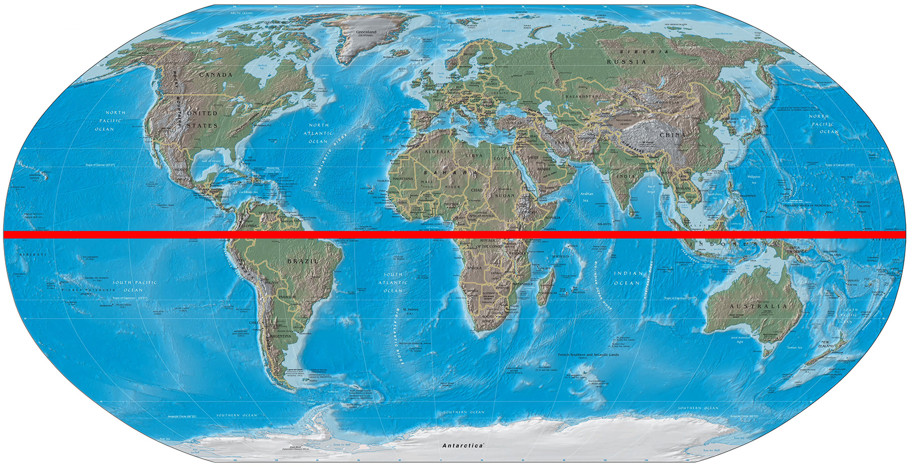

The Landing Page (HOME)

Reference: https://cdn.britannica.com/19/129119-050-6ED737BC/World-map-red-line-Equator.jpg
What are we looking at?
The purpose of this this site is to see the comparison of different factors that are involved
with latitude. We will be looking at the the visual comparison of four different weather conditions to the latitude of the earth as it is reaching the equator.
1)Temperature
2)Humidity
3)Cloudiness
4)Wind Speed
When looking at each comparison we give insight on what we can observe, such as trends and any correlations.
This is site is built on CSS and data is from the OpenWeather API that helped create these visualizations.